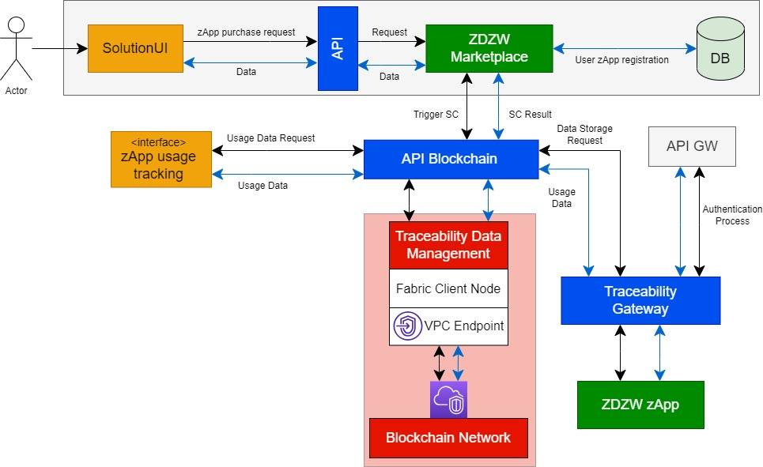
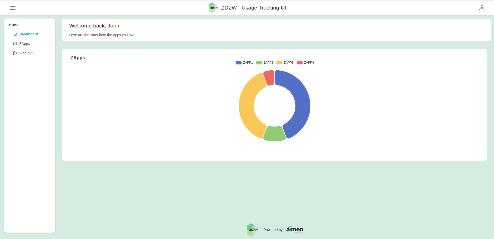
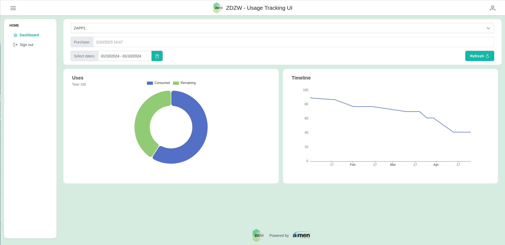
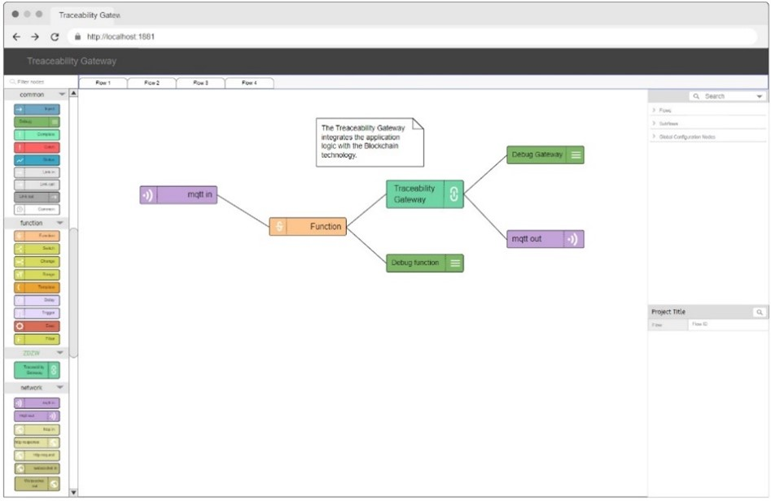
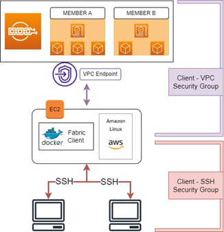
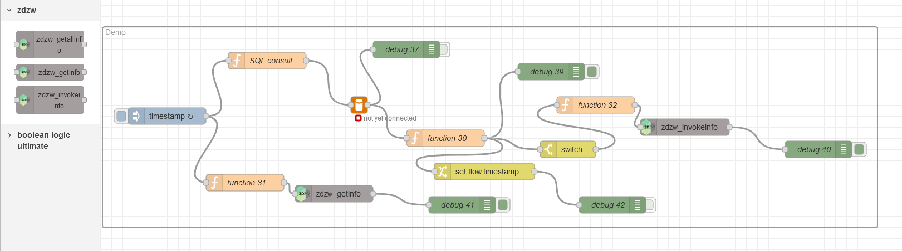

Usage Traceability
1. General Description
The Usage Traceability represents the central communication layer between the Marketplace, the Assets (applications users) and the ZDZW Blockchain. It provides the following main functions:
- Manages the smart contracts to be able to trace the usability of a ZDZW Inspection Solution.
- Implements business logic to allow the usage data traceability and monetization management.
- Stores in the ZDZW Blockchain the terms of the smart contract.
- Triggers payments according to the conditions implemented in the smart contract.
- Tracks and store the usage of ZDZW applications by end-users in the Blockchain (BaaS).
2. Top Ten Functionalities
-
Establish a secure & distributed database: The solution will store information regarding the acquisition and use of the zApps by different users in a distributed and secure manner. DLT-based technologies will be exploited for this purpose.
-
Blockchain network management, deployment: The solution shall deploy and manage the chosen Blockchain platform.
-
Blockchain integration with zApps and Marketplace: The solution will enable the Traceability Gateway to seamlessly connect the Marketplace's zApps acquisition processes with the Blockchain. This integration ensures secure storage and retrieval of usage data, creating a cohesive link between the acquisition of zApps and their traceability on the Blockchain.
-
Integration flow runtime: The solution will enable a streamlined and dynamic integration flow runtime within the Traceability Gateway, allowing developers to efficiently manage data ingestion, processing, and blockchain registration.
-
Data ingestion, data transformation, and blockchain registration functions: The solution will empower efficient data ingestion, seamless data transformation, and reliable blockchain registration functions within the Traceability Gateway, ensuring a cohesive and effective integration process.
-
Function palette management: The solution will facilitate comprehensive function palette management within the Traceability Gateway, offering developers a versatile toolkit to customize and optimize integration flows for zApps traceability.
-
Integration flow management: The solution will enable effective integration flow management within the Traceability Gateway, allowing developers to efficiently organize and oversee the flow of data for seamless zApps traceability.
-
Integration flow edition user interface: The solution will provide an intuitive user interface for editing integration flows within the Traceability Gateway, ensuring a user-friendly experience for developers to customize and optimize the flow of data for zApps traceability.
-
Function palette management UI: The solution will feature a user-friendly interface for managing the function palette within the Traceability Gateway, offering developers a seamless experience in customizing and optimizing integration flows for zApps traceability.
-
Provide Smart Contract Templates: The solution shall provide templates for the smart contracts that will manage the storage of zApps usage data.
-
Manage Smart Contracts: The solution shall manage the smart contracts involved in the storage and retrieval of zApps data from the Blockchain platform. This includes their deployment, initialisation and querying.
-
Storage Blockchain transactions: The solution shall store the zApps data in transactions within the Blockchain platform in such a way that it can be queried at a later stage.
-
Request and Usage registration: The solution shall store information regarding when a zApp was acquired, as well as when it is used and by whom.
-
Application Usage Tracking Visualization (Every zApp that a user owns) (Figure 2): Enables users to visually track and analyze the usage patterns and frequency of each zApp they own.
-
Application Usage Tracking Visualization (Specific zApp) (Figure 3): Offers a dedicated interface displaying detailed analytics and usage metrics of a particular zApp, aiding users in understanding its performance through interactive visual representations.
3. Architecture Diagram

Figure 1. Solution Architecture
The solution requires data from other modules created in ZDZW, like the marketplace. These modules (in grey in Figure 1) are external to those created in T7.4. However, they are represented in the figure to facilitate the understanding of how the T7.4 modules will be integrated with the rest of the ZDZW platform. Thus, the modules developed for this task are as follows:
- Blockchain API: This service allows other modules to interact with the Blockchain. On the one hand, it will include all the services to be able to manage the the Smart Contract that will be requests from the Marketplace once the user acquires a Zapp. On the other hand, the API must store the transactions that come from the use of the Zapp. In addition, it must respond to the requests that come from the Zapp Traceability Monitoring. This API also is going to interact with the services provided by AWS BaaS.
- Smart Contract Management: This service manages Smart Contract. It will store different types of Smart Contract, according to the condition of use of the Zapp, install, instantiate, execute a Smart Contract and finish once the execution condition has expired.
- Traceability Data Management: This service manages providing and storing usage data for traceability. Whenever a Zapp is used based on the condition of use that has been selected in the marketplace, this service will store the transaction in the blockchain, and all requests for Zapp usage will also be made through this module.
- Blockchain: The Blockchain service, it stores zApp usage information, and Smart Contracts for each zApp purchases.
- zApp Usage Tracking interface: User interface for usage traceability (front end).
- Traceability Gateway: This component enables the integration of the modules designed in T7.4 with the marketplace and the zApps. It provides Software Development Kits (SDKs) that developers can use in their backend solutions to integrate with the traceability solution, and a dedicated interoperability solution based on Node-Redi. This traceability solution allows zApps developers to easily edit and manage integration flows to register zApp backend data into the Blockchain, using a dedicated integration flow runtime component. Integration flows normally combine data ingestion functions, data processing functions, and a blockchain storage function to register new data in the blockchain. Data processing functions allow to ingest data from backend services such as database services (relational or non-relational database), file systems (e.g. CSV or XML files), or messaging services (e.g. MQTT or AMQP brokers). Data transformation functions support the transformation of data to the specific JSON formatted data that the zApp will use to trace usability data. Finally, the blockchain storage function facilitates the connection to the API Blockchain component.
4. Image Overview
The frontend of the usage tracking system is built around two distinct but complementary functionalities. The first functionality allows users to monitor the usage of all applications briefly. This function provides an overview of application usage, allowing users to obtain valuable information in a glimpse.
The second functionality focuses on providing detailed information on individual applications. Leveraging this feature, users can access specific and detailed information about the usage patterns of each application. This tailored insight provides a deeper understanding of usage metrics, allowing users a more comprehensive analysis of their application utilization.
4.1. Usage Tracker: main zApps
As Figure 1 shows, users can track the usage of the different apps they have purchased from the ZDZW Marketplace. Also, they can get a general summary about the usage of the different zApps, and visualize which ones are the most used. Finally, either by clicking each app or by going to custom view, they can get individualized info on each zApp Figure 2

Figure 2.
4.2. Usage Tracker: one zApp
Figure 3 shows the information relating to a specific zApp. The individualized view presents information like the chosen payment method, how many uses they have left or how much they have used the zApp during the last months. Additionally, our implementation includes a date filter, allowing users to refine and analyze usage data based on specific timeframes for enhanced insights and tailored assessments.

Figure 3.
4.3. Traceability Gateway
Although the Traceability Gateway is a backend module, it also incorporates an interface. Figure 4 shows a mockup of the user interface of the traceability Gateway. The tool provides a toolkit of nodes that can be used to integrate backend functions. Some of the nodes include MQTT clients, HTTP clients or servers, relational database clients, CSV file readers, etc. Through the interface, users can drag a node and drop it in the edition area, and then interconnect nodes to build the integration logic with the traceability function as a flow.
The provided example illustrates a sample flow, where an MQTT client node (MQTT in) subscribes to a MQTT topic. When new data is published on this topic, the node will generate a message that will be passed to the next node. This function node performs conversions on the incoming data, formatting the data to be traced in the traceability solution. The formatted data is then passed to a Traceability Gateway node that will register the data in the ZDZW blockchain based traceability solution.

Figure 4. Traceability Gateway
5. Hardware Components
This does not apply to T7.4.
6. Computation Requirements
The minimum and recommended CPU, RAM and storage requirements are as follows.
6.1. Blockchain Platform
The BAAS platform chosen is the one provided by AWS. Using AWS to deploy a Blockchain network requires the combined use of several of its products. Therefore, it must be ensured that all of them are available in the AWS region being used. We will use Ireland, eu-west-1, which is the one that ensures that the data is on EU soil.
Thus, Amazon Managed Blockchain (AMB) has been leveraged to create a private Blockchain network based on Hyperdledger Fabric. AMB can be used to create the Hyperledger network, the members, and their peers. However, this service needs Fabric clients that interact with the network (created using the AWS service EC2) and connection management and traffic control (created using the AWS VPC). An overview of the configuration is presented in Figure 5.

Figure 5. AWS Hyperledger Deployment
For this configuration to be successful, there are minimum requirements that both the peer nodes and the client fabric must meet.
- The Blockchain instance type of the peer node must be at least of type bc.t3.small.
-
The EC2 instance containing the Fabric Client must be at least of type t3.medium and has been given a storage capacity of 20 GiB. Furthermore, when configuring the EC2 instance, the Amazon Machine Image (AMI) must be chosen, which, in the case of the instance for the Fabric client, must be Amazon Linux. Moreover, among the available images, Amazon Linux 2023 AMI 2023.1.20230825.0 x86_64 HVM kernel-6.1 and 64-bit architecture have been chosen. Finally, to finish configuring the EC2 instance, it is necessary to ensure that the EC2 instance has all the necessary packages, such as Docker, Docker-compose, or Golang. The required versions of those packages are:
-
Docker–17.06.2-ce or later
-
Docker-compose–1.14.0 or later
-
Go–1.14.x
Note: More information and details about the requirements are provided in the Deployment Annex
6.2. Traceability Gateway
The deployment of the Traceability Gateway is containerized using Docker, providing a convenient and isolated environment for efficient execution. Below are the specific computation requirements for the Traceability Gateway within a Dockerized deployment:
-
Processor (CPU): The Traceability Gateway Docker container is optimized for containerized environments and adapts well to varying CPU resources. A quad-core or higher processor is recommended for handling increased workloads and concurrent integration flows.
-
Random Access Memory (RAM): Allocate a minimum of 8GB of RAM to the Docker container hosting the Traceability Gateway.
-
Storage: Docker containers benefit from efficient storage utilization. Ensure that the host system provides sufficient disk space for Docker images and containers. A minimum of 20GB of available disk space is recommended to accommodate configuration files, logs, and temporary data within the Traceability Gateway container.
-
Operating System Compatibility: Docker containers offer platform-agnostic deployment. The Traceability Gateway Docker image is compatible with various operating systems. Users can deploy the Docker container on Linux, Windows, or macOS systems that support Docker. Ensure that the host system has Docker installed and configured.
By considering these computation requirements in a Dockerized environment, users can optimize the deployment of the Traceability Gateway, leveraging the benefits of containerization for efficient integration and management of zApps traceability within the ZDZW platform.
6.3. Usage tracking Visualization
The Usage tracking Visualization is a web application that uses Angular framework to display data and charts. It runs inside a Docker container, which makes it easy to deploy and manage. To run the Usage tracking Visualization, a server with Docker installed will be needed and a hardware of at least 2 cpu cores and 4Gb of RAM for optimal performance.
7. Installation Procedure
Step by step on how to install the application: * Standalone * In the Kubernetes platformm using helm charts: description of the different options
7.1. Blockchain Platform
Once the minimum configuration explained in section 6.1 has been set up, connections to the Blockchain network can be established. For the first connection, the following are required:
- A Blockchain network.
- A channel within this network.
- An EC2 instance.
- The security zones explained in section 6.1 correctly configured.
For a successful first connection from a local computer, it is necessary to have:
- The private key used during the creation of the VPCs.
- The public IP of the computer from which we are connecting.
- The public DNS of the instance.
To control incoming traffic to the EC2 instance, the public IP of the local machine will be permitted to connect to the VPC. Once permissions are granted, using SSH and the public DNS of the instance, it is possible to connect to the instance remotely.
Once on the instance, make sure the Docker container containing the fabric client is running:
Once the fabric client is up, packages can be installed and uninstalled in the instance like in a regular Ubuntu machine. As far as the installation and deployment of Smart contracts are concerned, this is done via dockerized .go scripts. A detailed explanation can be found in the Annex.7.2. Traceability Gateway
To deploy the Traceability Gateway using Docker Compose from the provided Git repository and Helm charts for Kubernetes (to be released in the future), follow these steps:
-
Clone the Git Repository:
-
Navigate to the Repository Directory:
-
Configure Docker Compose (Optional): Modify the
docker-compose.ymlfile if specific configurations are required, such as adjusting ports or volumes. -
Build and Start the Docker Containers:
This command builds and starts the Traceability Gateway Docker containers in detached mode. -
Access the User Interface: Open a web browser and navigate to
http://localhost:1880to access the Node-RED user interface. -
Configure Integration Flows: Utilize the Node-RED interface to design and manage integration flows. Customize nodes, interconnect them, and configure each node based on your integration requirements.
-
Save and Deploy Flows: Save your integration flows within Node-RED, and click the "Deploy" button to activate the changes. This ensures that your configured flows are ready for execution.
-
Monitor Logs: Monitor the container logs for any potential issues or debug information. Use the following command to view logs:
-
Shutdown the Containers: When needed, stop and remove the Traceability Gateway containers:
By following these steps with Docker Compose, you can deploy the Traceability Gateway from the specified Git repository, facilitating seamless integration and management of zApps traceability within the ZDZW platform. Adjust configurations as necessary for your specific deployment environment and requirements.
Note for Kubernetes Users: Helm charts for deploying the Traceability Gateway on Kubernetes are currently under development and will be released in the future. Stay tuned for updates on Helm chart availability. Adjust configurations as necessary for your specific deployment environment and requirements.
7.3. Usage tracking Visualization
To get started, clone the project and set up the environment variables. Make sure you enter the correct URLs of the services that the web app will communicate with. Then build and start docker containers generated with this command:
8. How To Use
8.1. Blockchain Platform
The Blockchain data storage and retrieval services are provided through a Blockchain API, as shown in Figure 1. This API exposes the Blockchain services to the Traceability Gateway and the zApp Usage Tracking to facilitate the integration of all the modules that make up T7.4.
This API is deployed on the AWS instance, as the Computation Requirements section explains. The connection to this API is made through port 8080, for which an IP-based access control has been configured. Therefore, access privileges have been given to the Traceability Gateway and the zApp Usage Tracking. This access control using security groups ensures the privacy of the solution, guaranteeing control over the conditions under which they interact with the Blockchain platform.
Depending on the business model of each zApp, the smart contract will be different. Four smart contract models have been defined. Currently, the "Pay per Volume" model has been implemented, so the examples below refer to this type of contract.
The data offered is in JSON format, which corresponds to the following schema:
{
"ZAppId":"ZApp1",
"UserId":"User1",
"MachineId":"Machine1",
"SCtype":"A",
"UsageInfo":[
{"UsesLeft":"100","InitTime":"2023-01-01","EndTime":""},
{"UsesLeft":"95","InitTime":"2023-01-02","EndTime":"2023-01-03"}
],
}
Leveraging this data model, the Blockchain API facilitates the storage of lifecycle information in a blockchain network, ensuring robust traceability. In addition, the API includes several visualisation functions to improve the representation and understanding of the data.
For this purpose, the following milestones in the lifecycle of a smart contract have been identified: - Creation of the smart contract during the acquisition of the zApp. - Installation of the zApp if it is on-premise. - Use of the zApp. - Decommissioning of the zApp.
For this purpose, functionalities have been created in the API that allow these tasks to be carried out. In addition, the API also offers a multitude of endpoints to obtain data for visualisation. In the following, the endpoints' example statements are given.
When using the API it is important to take certain aspects into consideration:
- The API is case-sensitive.
- All timestamps must be in UTC and in the following format: YYYY-MM-DD hh:mm:ss. It is up to the user to pass the appropriate time format. Failure to do so may lead to errors in the traceability of the information.
- Optional values must still include the tags. E.g., "InitTime"="" or "EndTime"=""
- Inputs may not contain hyphens.
- If successful, the output of the API may vary, but if unsuccessful, the API will return:
- 400: The input data does not have the correct format.
- 500: The API has failed.
However, a more detailed description, defining inputs, outputs, as well as the response of the endpoints both in case of correct operation and error, is given in the Annex.
8.1.1. Application Purchase
Each time a User purchases a zApp, the Marketplace uses this functionality to store that application's purchase conditions. The endpoint for this action is /createSmartContractZapp.
curl http://3.248.77.23:8080/createSmartContractZapp --include --header "Content-Type: application/json" --request "POST" --data '{"MarketplaceId": "ZDZWStore","MarketplaceIp":"172.16.100.23", "ProviderId":"Provider2", "ProviderIp":"185.28.103.28", "UserId":"Ikerlan", "UserIp": "170.58.133.53", "PayType":"A", "ZAppId": "Surface_Inspection_v1", "OnPremise":false, "MaxUses":"500","InitTime":"2024-05-20 8:00:00"}'
200 OK- The unique identifier of the contract created for that sale. For example:
CompanyA_Thermal_Analysis_ppv_1. This identifier is used in other API endpoints, and thus should be stored.
8.1.2. Installation of the Application on a Machine
If the application is on-premise, the application will be installed, indicating which machine it will finally be installed on. This information must be stored on the Blockchain, creating the registry into which usage information will subsequently be stored. The endpoint for this action is /invokeInit.
This functionality should not be used if the application runs on the cloud.
curl http://3.248.77.23:8080/invokeInit --include --header "Content-Type: application/json" --request "POST" --data '{"ZAppId": "Thermal_Analysis_v3", "UserId":"Ikerlan", "MachineId":"ConveyorBelt_120", "PayType":"A", "InitTime":"2024-05-18 10:00:18", "SmartContractID":"Ikerlan_Thermal_Analysis_v3_ppv_1"}'
If successful, the API will return:
200 OKinit true
8.1.3. Application Usage
Whenever an application is used, information about that use is stored on the blockchain network. This data can be used to track whether a User is trying to exceed their purchased uses, or how many uses they have left. The endpoint for this action is /invokeInfo.
This function distinguishes between machine-installed applications and those running in the cloud. Therefore, it is essential to take into account the following aspects of the inputs to ensure the correct functioning of the API:
- MachineId: This parameter can have two values:
- If the application is on-premise, it must be the same Machine defined during the installation.
- The value must be' cloud' if the application is on the cloud.
curl http://3.248.77.23:8080/invokeInfo --include --header "Content-Type: application/json" --request "POST" --data '{"ZAppId": "ZApp2", "UserId":"User1", "UsesCount":"10", "InitTime":"2024-08-01 01:01:01", "EndTime":"", "MachineId":"Machine2", "PayType":"A"}'
If successful, the API will return:
200 OKtrue
8.1.4. Application Decommissioning
When an application reaches the end of uses, or the contract is cancelled, it can be blocked. This action prevents the data from being stored in the blockchain network, while still leaving all previous information accessible. The endpoint for this action is /blockUser.
curl http://3.248.77.23:8080/blockUser --include --header "Content-Type: application/json" --request "POST" --data '{"ZAppId": "Thermal_Analysis_v2", "UserId":"Ikerlan"}'
200 OK
8.1.5. Get all the Contracts owned by a Company
This functionality displays all Smart Contracts owned by a marketplace user. The endpoint for this action is /getCompanySmartContracts.
curl http://3.248.77.23:8080/getCompanySmartContracts --include --header "Content-Type: application/json" --request "POST" --data '{"UserId":"Ikerlan"}'
If succesful, the API will return:
200 OK- A JSON containing a list of all smart contracts owned by that user, alongised the application they are related to. For example:
{
"List": [
{ "SmartContractId": "Company1_ZApp1_ppv_1", "ZAppId": "ZApp1" },
{ "SmartContractId": "Company1_ZApp1_ppv_2", "ZAppId": "ZApp1" },
{ "SmartContractId": "Company1_ZApp1_ppv_3", "ZAppId": "ZApp1" },
{ "SmartContractId": "Company1_ZApp1_ppv_4", "ZAppId": "ZApp1" }
]
}
8.1.6. Get the Metadata of a Smart Contract
This functionality displays all Smart Contracts owned by a marketplace user. The endpoint for this action is /getSmartContractMetaData.
curl http://3.248.77.23:8080/getSmartContractMetaData --include --header "Content-Type: application/json" --request "POST" --data '{"Identifier": "Ikerlan_Thermal_Analysis_v2_ppv_1"}'
If succesful, the API will return:
200 OK- A JSON containing all the metadata for the specified contract. For example, the following JSON is the metadata for an application that goes on cloud, which has been purchased and is still on use.
{
"zAppId":"Handling_Defects_01",
"CompanyID":"ZDZWAmerica",
"ProviderID":"Provider1",
"SCType":"PayPerVolume",
"PurchaseTS":"2024-05-23 09:45:00 +0000 UTC",
"MaxUses":200,
"MachineId":"cloud",
"InitTS":"2024-05-23 09:45:00 +0000 UTC",
"InstallTS":"not installed",
"DecomissionTS":"still on use"
}
8.1.7. Get purchase data about an application
This functionality provides information about the conditions under which a specific app was bought. The endpoint for this action is /getInitInfoSmartContractZapps
curl http://3.248.77.23:8080/getInitInfoSmartContractZapps --include --header "Content-Type: application/json" --request "POST" --data '{"ZAppId": "Thermal_Analysis_v2", "UserId":"Ikerlan", "PayType":"A"}'
If succesful, the API will return:
200 OK- A JSON containing the purchase information. For example:
{
"MachineID":"cloud",
"UsageInfo":[
{
"EndTime":"",
"InitTime":"2024-05-23 09:45:00 +0000 UTC",
"UsesLeft":200
}
],
"UserId":"ZDZWAmerica",
"ZAppId":"Handling_Defects_01"
}
8.1.8. Get installation data about an application
If the application was on-premise and has already been installed, this function shows when the installation happened, and which machine it affects. The endpoint for this action is /getInitInfo.
curl http://3.248.77.23:8080/getInitInfo --include --header "Content-Type: application/json" --request "POST" --data '{"ZAppId": "ZApp3", "UserId":"User1", "PayType":"A", "MachineId": "Machine3"}'
If succesful, the API will return:
200 OK- A JSON containing the installation information. For example:
{
"MachineID": "Machine2",
"UsageInfo": [
{
"EndTime": "",
"InitTime": "2024-04-19 11:07:32",
"UsesLeft": 500
}
],
"UserId": "User1",
"ZAppId": "ZApp2"
}
8.1.9 Get usage information from a zApp
All information related to the use of an application can be retrieved. The endpoint for this action is /getAllInfo
curl http://3.248.77.23:8080/getAllInfo --include --header "Content-Type: application/json" --request "POST" --data '{"ZAppId": "ZApp2", "UserId":"User1", "InitTime":"2016-01-01 01:01:01", "PayType":"A", "EndTime":"2025-01-01 01:01:01", "MachineId": "Machine2"}'
200 OK- A JSON containing the usage information. For example:
{
"MachineID":"ConveyorBelt_155",
"UsageInfo":[
{
"EndTime":"",
"InitTime":"2024-05-21 12:00:00 +0000 UTC",
"UsesLeft":498
},
{
"EndTime":"",
"InitTime":"2024-05-21 10:30:00 +0000 UTC",
"UsesLeft":500
}
],
"UserId":"Ikerlan",
"ZAppId":"Thermal_Analysis_v2"
}
8.1.10 Get the last usage status from a zApp
The functionality provides information about the number of uses has left. The endpoint for this action is /getUserInfo.
curl http://3.248.77.23:8080/getUserInfo --include --header "Content-Type: application/json" --request "POST" --data '{"ZAppId":"ZApp1", "UserId":"User1", "MachineId":"Machine1", "PayType":"A", "InitTime":"2016-01-01 01:01:01", "EndTime":""}'
If succesful, the API will return:
200 OK- A JSON containing the purchase information. For example:
{
"MachineID":"cloud",
"UsageInfo":[
{
"EndTime":"",
"InitTime":"2024-05-24 12:01:33",
"UsesLeft":100
}
],
"UserId":"ZDZWAmerica",
"ZAppId":"Handling_Defects_01"
}
8.2. Traceability Gateway
The Traceability Gateway offers a user-friendly interface through Node-RED, providing a visual and intuitive way to configure integration flows for zApps traceability. Follow these steps to effectively use the Traceability Gateway:
-
Access the Node-RED Interface: Open a web browser and navigate to
http://localhost:1880or the specified host and port where Node-RED is running. This grants access to the Node-RED user interface. -
Explore the Node Palette: On the left side of the interface, you'll find the node palette containing various nodes representing different functionalities tailored for different smart contract types.
-
Drag and Drop Nodes: Build integration flows by dragging nodes from the palette and dropping them onto the editing area. This allows you to visually design the flow of data for traceability within the ZDZW platform.
-
Interconnect Nodes: Connect nodes by drawing links between them to define the logical sequence of data processing. This interconnection forms the integration flow, ensuring a smooth transition of data from one node to another.
-
Configure Nodes: Double-click on each node to configure its parameters according to your specific use case. Configure settings such as connection details, data transformations, and other parameters required for traceability.
-
Deploy Integration Flows: Save your configured integration flows within Node-RED, and click the "Deploy" button. This action activates the changes and makes your integration flows operational, ready to handle zApps traceability data.
-
Monitor Execution: Use the Node-RED interface to monitor the execution of integration flows. The interface provides real-time feedback on the status of nodes, ensuring transparency in the data processing pipeline.
-
Troubleshoot and Debug: In case of issues, utilize the Node-RED interface to troubleshoot and debug integration flows. Examine logs, inspect node statuses, and make adjustments as needed to ensure smooth operation.
-
Iterate and Improve: Continuously iterate on your integration flows based on evolving requirements. Use the flexibility of the Node-RED interface to make improvements, add new nodes, or modify existing configurations for enhanced traceability.
-
Save and Export Flows (Optional): Save your integration flows as a project within Node-RED, allowing for easy retrieval and modification. Optionally, export flows for sharing with other developers or for backup purposes.
By following these steps, you can effectively use the Traceability Gateway through Node-RED, enabling seamless integration and management of zApps traceability within the ZDZW platform. Adjust configurations as necessary to meet specific traceability requirements.
For example, users can integrate Node-RED with the Traceability Gateway and a SQL database, enabling them to orchestrate a robust and customizable workflow for efficient management of Zapp usage data within the ZDZW platform. The visual representation of the flow not only simplifies the design process but also facilitates easy monitoring and maintenance of intricate integration processes. As depicted in Figure 6, the interconnected nodes and logical sequence provide a clear overview, empowering users to visualize and optimize their data processing pipeline effortlessly.
 Figure 6. Traceability Gateway
8.3. Usage tracking Visualization
For the Usage Tracking Visualization tool, users need to enter the URL of the web-app in their browser and log in with their valid credentials. The tool provides interactive features such as filtering, sorting, zooming data and charts.
9. Additional Learning Materials
HyperLedged Fabric https://www.hyperledger.org/projects/fabric
Amazon Managed Blockchain https://aws.amazon.com/es/managed-blockchain/
Amazon Managed Blockchain Deployment https://github.com/zdzw-eu/UsageTraceability/blob/main/docs/annex/ZDZW_AmazonManagedBlockhainDeployment_ANNEX.pdf